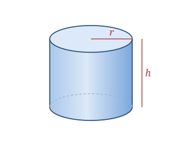

A cylinder is a solid with two parallel circular bases of equal size, connected by a single curved surface. In a right circular cylinder the side is perpendicular to the bases, so the shape looks like a can standing upright.
Common cylinders include soup and soda cans, pipes, batteries, candles, and drinking glasses.
A cylinder is defined by the base radius r and the height h.
| Surfaces | 2 flat circular bases + 1 curved side |
|---|---|
| Radius | r |
| Height | h |
Volume V = πr²h
Curved SA CSA = 2πrh
Total SA SA = 2πr² + 2πrh = 2πr(r + h)
Base circ. C = 2πr
Take a cylinder with radius r = 3 and height h = 7.
V = πr²h = π(9)(7) = 63π ≈ 197.92
CSA = 2πrh = 2π(3)(7) = 42π ≈ 131.95
Total SA = 2πr(r + h) = 2π(3)(10) = 60π ≈ 188.50
Base circumference = 2πr = 6π ≈ 18.85
Unroll a cylinder's curved side and it flattens into a plain rectangle whose width is the base circumference (2πr) and whose height is h — which is exactly why the curved surface area is 2πr × h.